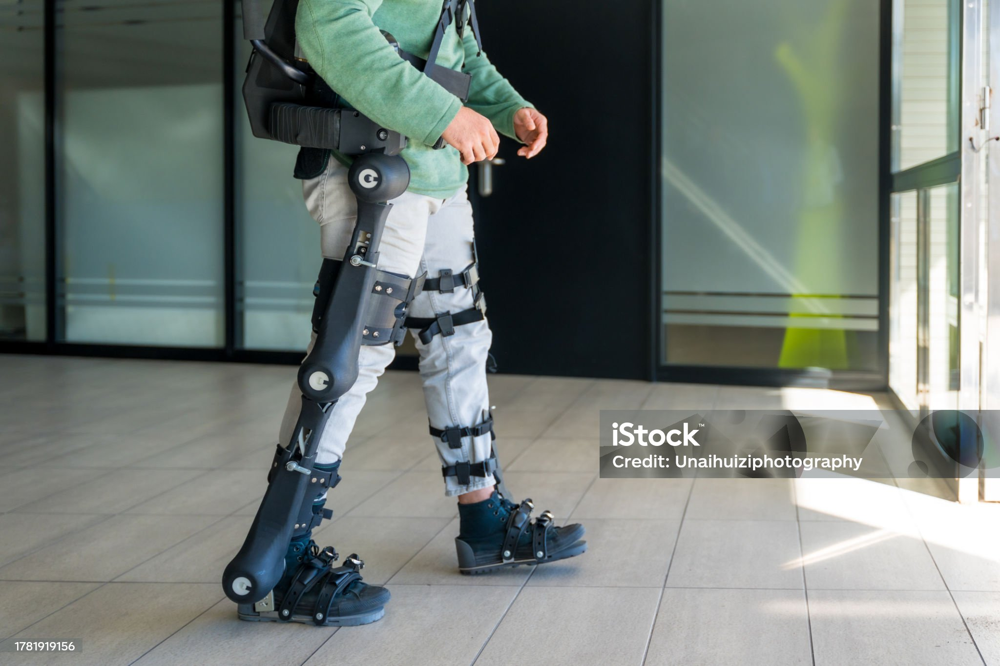
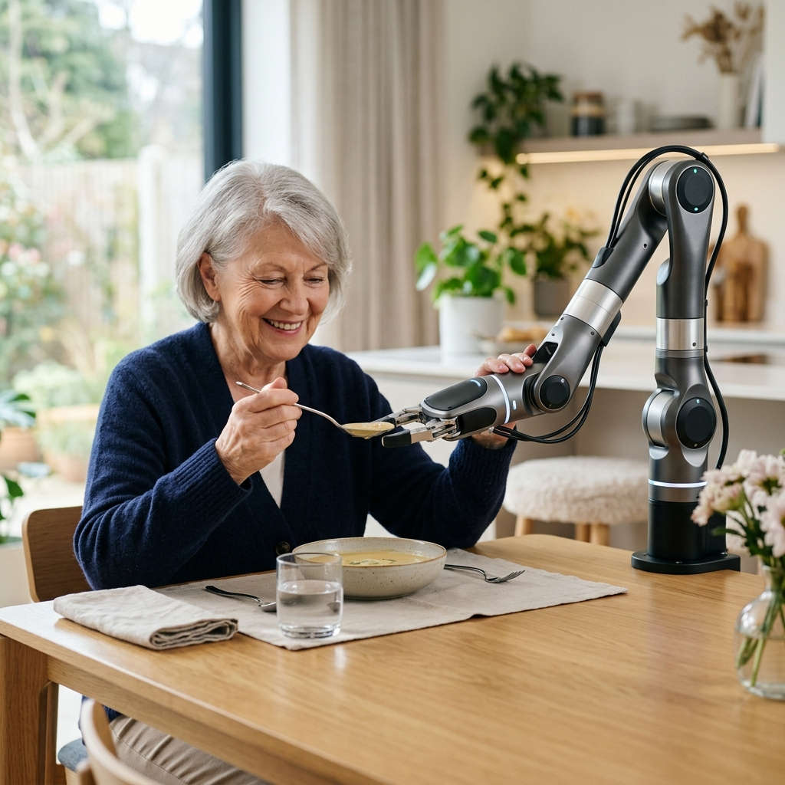

휴림로봇.
New Era of Robotics.
가상과 현실을 잇는 고정밀 제어 알고리즘과 하드웨어의 혁신
우리는 로봇의 '육체적 지능'을 창조합니다.
신체의 경계를 넘어,
일상으로의 복귀
Human Centric
"상실이 아닌 새로운 시작으로,
당신의 멈춰진 걸음을 다시 움직입니다."
몸의 불편함이 삶의 한계가 되지 않도록,
가장 든든한 신체가 되어 드립니다.
01. 따뜻한 기술 (Humanity)
다시 잡는 손, 다시 딛는 발걸음. 당신의 평범한 일상을 기술로 완성하며 삶의 자유를 다시 선물합니다.
02. 독보적 전문성 (Technical)
인간의 의지와 정밀 공학의 만남. 생체 신호와 로봇 기술을 융합하여 완벽한 거동의 자유를 실현합니다.
03. 새로운 정의 (Innovation)
한계를 뛰어넘는 메카트로닉스 기술로 신체의 기능을 재정의하고, 기술로 세상을 잇는 힘이 됩니다.

하체 근력 보조 슈트
보행이 어려운 장기 부상자나 노약자의 보행을 돕는 하체 외골격 로봇입니다. 지면을 딛는 힘을 정밀하게 보조합니다.

웨어러블 허리 보조 로봇
무거운 짐을 들거나 고된 작업 환경에서 허리의 하중을 분산시켜 부상을 방지하고 작업 효율을 극대화하는 외골격 솔루션입니다.

로봇 AI & 바이오닉스
사람을 향하는 첨단 지능형 로봇 AI 기술과 신체 보조를 위한 바이오닉스 솔루션으로 로봇 융합 시대를 선도합니다.

인공지능 생체 의수 (Bionic Arm)
사람의 근전도 신호를 실시간으로 읽어 실제 손처럼 정교하고 부드러운 움직임을 재현하는 차세대 바이오닉 암 솔루션입니다.

자립 생활 보조 통합 솔루션 (Assistive Integration Solution)
마비 환자의 식사, 도구 사용 등 일상 자립생활을 정밀 보조하는 통합 기술입니다.
휴림로봇의 핵심 사업영역
1. 복지
(Welfare)
재활 기기는 일반 가전이나 IT 기기와 다릅니다. 환자의 신체적 제한과 심리적 상태를 깊이 이해해야 합니다.
- o 렌탈 및 구독 서비스 모델 기기를 판매하는 데 그치지 않고, 치료 기간(예: 3개월, 6개월) 동안만 저렴하게 대여하고 반납하는 순환형 복지 모델을 구축할 수 있습니다.
- o 다양한 신체 조건 고려 사고 유형에 따라 환자의 마비 정도, 관절 가동 범위, 근력이 완전히 다릅니다. 고정된 규격이 아니라, 환자 맞춤형으로 조절 가능한 모듈형 설계와 인체공학적 설계를 R&D의 핵심 과제로 삼고 있습니다.
- o 친절하고 정확한 상담 지원 기기 검토부터 실사용 과정까지 환자와 보호자의 입장에서 경청하며, 환자의 상태와 거주 환경에 맞는 복지 혜택과 사용 가이드를 친절하고 정확하게 상담해 드립니다.
2. 연구개발
(Research & Development)
단순히 신체를 움직여주는 기계적 장치를 넘어, 데이터 기반의 스마트 기기로 진화해야 경쟁력이 있습니다.
- o 생체 신호 및 운동 데이터 수집 기기에 최첨단 센서를 탑재하여 환자의 근전도(EMG), 관절 각도, 가해지는 힘의 크기 등을 실시간으로 측정하고 체계적인 데이터를 수집하는 R&D를 전개합니다.
- o AI 기반 맞춤형 재활 프로토콜 축적된 생체 모션 데이터를 학습한 AI가 환자의 회복 속도를 분석하고, 당일 수행할 최적의 재활 난이도 및 보조 알고리즘을 지능적으로 맞춤형 추천합니다.
- o 환자 및 의료진 개발 참여 (Co-creation) 기획 초기 단계부터 재활의학과 전문의, 물리치료사, 그리고 실제 환자를 R&D 팀의 자문단으로 참여시킵니다. 의료진이 쓰기 편해야 추천을 하고, 환자가 편해야 지속적으로 사용할 수 있습니다.
신뢰를 더하는 부품 및 지원 제품

고감도 신경 전극 키트
생체 신호를 노이즈 없이 포착하여 로봇에 전달하는 의료 등급 전극 패키지입니다.

재활 분석 소프트웨어
보행 패턴과 근육의 발달 상태를 정밀하게 분석하여 데이터 기반의 재활 컨설팅을 제공합니다.
커뮤니티
글쓰기
기술 문의 및 소통을 환영합니다.
환영합니다! Firebase로 구동되는 실시간 커뮤니티 게시판입니다. 자유롭게 의견을 남겨주세요.